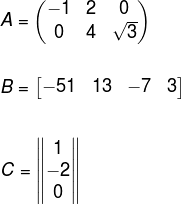

Olá, como você vai? Meu nome é Evelyn, sou aluna do Instituto Federal de Educação, Ciência e Tecnologia do Rio Grande do Sul, no Campus Erechim, pelo curso técnico em Informática integrado ao Ensino Médio. Nessa página, irei apresentar meu Trabalho de Matrizes, que foi proposto pelas disciplinas de Matemática, lecionada pela professora Valéria Lessa, e de Desenvolvimento de Web II, lecionada pela professor Ernane Gottardo.
Matriz é uma tabela organizada em linhas e colunas no formato m x n, onde m representa o número de linhas (horizontal) e n o número de colunas (vertical). Ela conterá números relacionados a uma determinada situação e será organizada entre parenteses(), conchetes[] ou barras||, como na imagem abaixo:

Clique aqui para ir a página do trabalho.